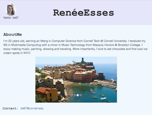

My Projects
Personal Homepage
I designed a simple personal webpage for my startup systems course that uses Bootstrap and Google Analytics. Check it out at: startup-systems
Chordland
Chordland is a game I created as a group project for my Game Design course at CUNY Brooklyn College. This educational, non-violent shooter game is meant to teach players
about the musical notes that make up chords and how they sound. We created it using Processing and the minim sound library.
Check out the code at: chordland
Fruit Stand
Fruit Stand is a website/app that is meant to be a fun way for young people to learn about seasonal fruits and vegetables and running a business.
I created the site for my Multimedia Computing course at CUNY Brooklyn College with the goal of furthering STEM education. It is modeled after the classic lemonade stand game. Players must choose the fruits and vegetables that they want to sell at their fruit stands and set their prices based on the date and weather displayed!
Check out the site at: Fruit Stand
For android: Click to Download or scan the code below